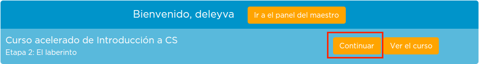

Para superar este módulo
Para superar este módulo deberás completar el cuestionario del mismo en Aularagón y realizar unos cuantos "puzzles" en code.org.
Entra en el curso de code al que te has unido en la sección anterior. Basta con iniciar sesión en code.org y clicar en "Continuar".
¡¡¡IMPORTANTE!!!!.Para facilitar el seguimiento de tu progreso, accede a tu cuenta y modifica el campo Nombre a mostrar introduciendo tu DNI. Si no lo haces, no podremos identificar que realizas los puzzles obligatorios que se mencionan a continuación, y no podrás superar el curso.

Deberás superar como mínimo los siguientes puzzles, tal y como ellos lo llaman:
Etapa 2
- 2 - Bloque avanzar
- 3- Bloque girar a la...
- 6 - Repetir x veces
- 9 - Repetir x veces con varias instrucciones
- 10 - Repetir hasta
- 11 - Bloque Si
- 18 - Bloque Si/Sino
Etapa 5
- 2 - Bloque definir colo
- 10 - Practicar con "definir color aleatorio" y "definir ancho"
Etapa 7
- 8 - Practicando bucles (loops)
Etapa 9
- 5 - Bloque Mientras (while)
- 11 - Pranticando condicionales y bucles (loops): repetir y mientras
Etapa 11
- 2 - Funciones y variables
- 6 - Bloque contador
- 7 - Practicando el bloque contador
Etapa 13
- 2 - Bloque función
- 3 - Creando tu propia función
- 9 - Practicando con funciones
Etapa 15
- 6 - Funciones con parámetros
Etapa 17
- 8 - Depuración o debugging
¡Diviértete!